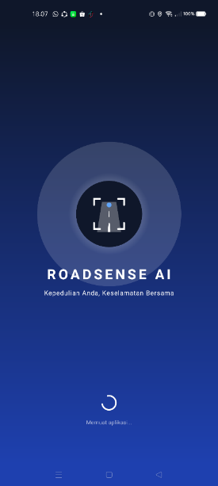
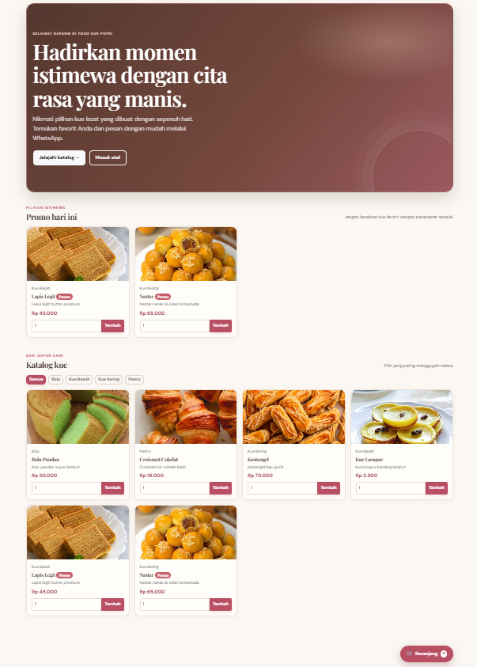

Halo, Saya
Muhammad Ahlam Putra Ganis
Mobile & Edge AI Developer | Data Analyst | Software Engineering
Saya merupakan mahasiswa Teknik Informatika yang memiliki minat di bidang informasi teknologi, khususnya pengembangan aplikasi berbasis web dan mobile. Saya memiliki minat dalam pemrograman, pengembangan sistem, database, serta penerapan teknologi untuk menyelesaikan permasalahan secara efektif. Saya senang mempelajari hal-hal baru, mampu bekerja secara individu maupun dalam tim, dan memiliki motivasi untuk terus mengembangkan kemampuan serta pengalaman di bidang informasi teknologi.
class Developer:
def __init__(self):
self.name = "Muhammad Ahlam Putra Ganis"
self.degree = "S.Kom (Teknik Informatika)"
self.thesis_grade = "A*"
self.focus = ["Mobile Edge AI", "Data Analytics", "Web Systems"]
def get_mindset(self):
return "Fast learner, adaptable, & problem solver"
# Status: Ready for internship & tech roles
>>> print("System Ready")
Tentang Saya
Bridge Between Code & Real-World Operations
Sebagai lulusan Teknik Informatika dari STT Wastukancana, saya memadukan logika software development dan Machine Learning dengan pengalaman operasional langsung di lapangan. Latar belakang ini membentuk pola pikir yang tak cuma tajam secara analitis, tapi juga praktis dan adaptif saat eksekusi.
Riwayat Akademik
Pendidikan
S1 Teknik Informatika
STT Wastukancana
September 2022 – Agustus 2026
Meraih gelar Sarjana Komputer (S.Kom). Fokus akademik mencakup pengembangan perangkat lunak, aplikasi mobile, dan penerapan Edge AI.
Jurusan Ilmu Pengetahuan Alam (IPA)
MA Al-Huda 1 Jatiluhur
Februari 2020 – Desember 2022
Menyelesaikan pendidikan menengah atas dengan fokus pada ilmu pengetahuan alam, membangun dasar yang kuat untuk studi lanjutan di bidang teknik dan teknologi.
Keahlian & Toolkit
Teknologi & Kompetensi Utama
Hard Skills
Mobile & Edge AI
Data Analytics & Logic
Web & Tools
Soft Skills
Portofolio
Proyek & Hasil Karya

img/projects/deteksi-jalan/cover.jpg
Deteksi & Klasifikasi Kondisi Jalan Real-Time (Edge AI)
Aplikasi Android untuk klasifikasi jalan rusaknya citra kamera secara luring (*on-device*). Memanfaatkan arsitektur MobileNetV2 & TFLite, integrasi CameraX, koordinat GPS presisi, dan pengiriman laporan otomatis via Telegram Bot API.

img/projects/pos-toko-kue/cover.jpg
Sistem Informasi POS & Digital Marketing Toko Kue
Sistem aplikasi web *Point of Sale* (POS) untuk otomatisasi pembukuan transaksi harian, pengelolaan inventaris produk, serta promosi produk berbasis web untuk operasional Toko Kue Putri.
Kredensial
Sertifikat & Pembekalan Resmi
Memulai Pemrograman dengan Haskell
Sertifikat Kompetensi Kelulusan berstandar kurikulum STEI ITB. Total 20 jam materi functional programming, tuple, list, dan skrip algoritma.
Memahami Penetapan Biaya & Analisis Bisnis Excel
Pelatihan pengolahan data operasional, costing analysis, dan pemodelan keputusan bisnis. Nilai Akhir: 76.9 (Predikat Sangat Baik).
Digital Leadership: Memimpin di Era Teknologi
Pembekalan wawasan manajemen teknologi dan strategi kepemimpinan digital. Nilai Akhir: 100.0 (Sangat Baik).
12+ Essential Skills: Adaptability
Pembekalan kemampuan adaptasi tinggi di lingkungan profesional kerja Magang Nasional Kemnaker RI.
12+ Essential Skills: Digital Literacy
Pembekalan kompetensi literasi digital dasar & keamanan informasi profesional Magang Nasional.
12+ Essential Skills: Emotional Resilience
Pembekalan ketahanan mental, manajemen tekanan kerja, dan komunikasi emosional profesional.
Jejak Karir
Pengalaman Kerja & Operasional
Freelance Tour Leader
Doly Communication
Memimpin dan mengoordinasikan operasional tur regional, mengelola jadwal perjalanan, logistik grup, serta mengasah komunikasi dan resolusi kendala cepat di lapangan.
Technical Specialist / Mekanik
Bengkel Alif Motor
Melakukan diagnostik teknis sistem mekanis, perbaikan, dan *troubleshooting* terstruktur pada kendaraan dengan analisis masalah presisi.
Store Staff & Inventaris
Toko Variasi Lampu
Mengelola pencatatan stok barang, transaksi konsumen, dan penataan *display* inventaris secara sistematis.
Web Developer & Store Admin
Toko Kue Putri
Merancang sistem Point of Sale (POS) berbasis web, mengelola pembukuan keuangan harian, dan mengoptimalkan transaksi digital toko.
Kontak & Diskusi
Mari Terhubung & Bekerja Sama
Saya selalu terbuka untuk peluang posisi entry-level sebagai Mobile Developer, Data Analyst, maupun Junior IT Engineer. Jika Anda ingin berdiskusi lebih lanjut atau memiliki peluang yang sesuai, jangan ragu untuk menghubungi saya.